In geometry, a square is a regular quadrilateral, which means that it has four equal sides and four equal angles (90-degree angles, or right angles). It can also be defined as a rectangle in which two adjacent sides have equal length.
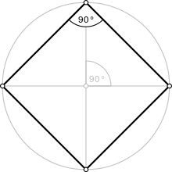In Euclidean plane geometry, a rectangle is any quadrilateral with four right angles. It can also be defined as an equiangular quadrilateral, since equiangular means that all of its angles are equal (360°/4 = 90°). It can also be defined as a parallelogram containing a right angle. A rectangle with four sides of equal length is a square. The term oblong is occasionally used to refer to a non-square rectangle.
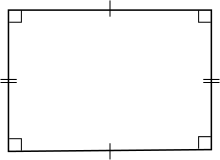A circle is a simple shape in Euclidean geometry. It is the set of all points in a plane that are at a given distance from a given point, the centre; equivalently it is the curve traced out by a point that moves so that its distance from a given point is constant. The distance between any of the points and the centre is called the radius.

A triangle is a polygon with three edges and three vertices. It is one of the basic shapes in geometry. A triangle with vertices A, B, and C is denoted ABC. In Euclidean geometry any three points, when non-collinear, determine a unique triangle and a unique plane (i.e. a two-dimensional Euclidean space). This article is about triangles in Euclidean geometry except where otherwise noted.
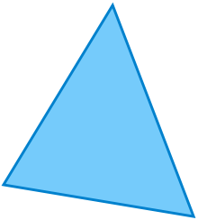In geometry, a cuboid is a convex polyhedron bounded by six quadrilateral faces, whose polyhedral graph is the same as that of a cube. While mathematical literature refers to any such polyhedron as a cuboid, other sources use "cuboid" to refer to a shape of this type in which each of the faces is a rectangle (and so each pair of adjacent faces meets in a right angle); this more restrictive type of cuboid is also known as a rectangular cuboid, right cuboid.
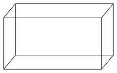In geometry, a cube is a three-dimensional solid object bounded by six square faces, facets or sides, with three meeting at each vertex. The cube is the only regular hexahedron and is one of the five Platonic solids and has 12 edges, 6 faces and 8 vertices. The cube is also a square parallelepiped, an equilateral cuboid and a right rhombohedron. It is a regular square prism in three orientations, and a trigonal trapezohedron in four orientations.
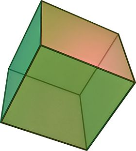A sphere is a perfectly round geometrical object in three-dimensional space that forms the surface of a completely round ball. Analogous to a circle in two dimensions, a sphere is defined mathematically as the set of points that are all the same distance r from a given point in three-dimensional space. This distance r is the radius of the sphere, and the given point is the center of the sphere. The maximum straight distance through the sphere passes through the center and is thus twice the radius; it is the diameter.
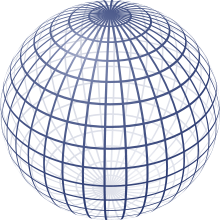A cone is a three-dimensional geometric shape that tapers smoothly from a flat base to a point called the apex or vertex. More precisely, it is the solid figure bounded by a base in a plane and by a surface formed by the locus of all straight line segments joining the apex to the perimeter of the base.
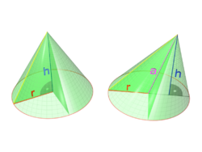A cylinder is one of the most basic curvilinear geometric shapes, the surface formed by the points at a fixed distance from a given line segment, the axis of the cylinder. The solid enclosed by this surface and by two planes perpendicular to the axis is also called a cylinder. The surface area and the volume of a cylinder have been known since deep antiquity.
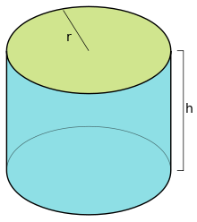In modern mathematics, a point refers usually to an element of some set called a space. Being a primitive notion , a point cannot be defined in terms of previously defined objects. That is, a point is defined only by some properties, called axioms, that it must satisfy. In particular, the geometric points do not have any length, area, volume, or any other dimensional attribute. A common interpretation is that the concept of a point is meant to capture the notion of a unique location in Euclidean space.
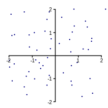The notion of line or straight line was introduced by ancient mathematicians to represent straight objects with negligible width and depth. Lines are an idealization of such objects. Until the seventeenth century, lines were defined like this: "The line is the first species of quantity, which has only one dimension, namely length, without any width nor depth, and is nothing else than the flow or run of the point which will leave from its imaginary moving some vestige in length, exempt of any width.
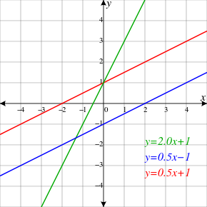In mathematics, a curve is, generally speaking, an object similar to a line but which is not required to be straight. This entails that a line is a special case of curve, namely a curve with null curvature.
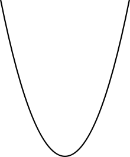